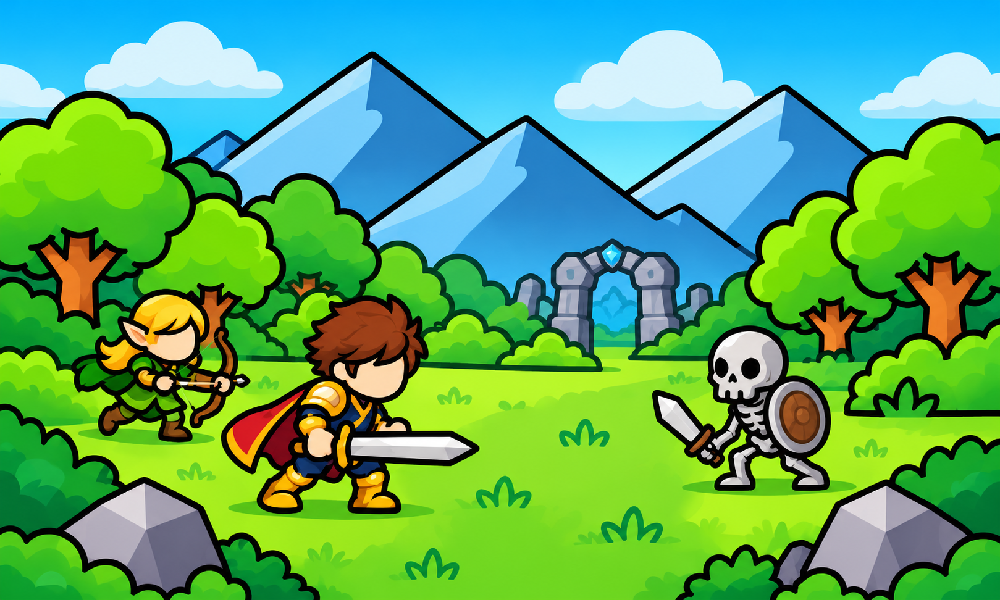
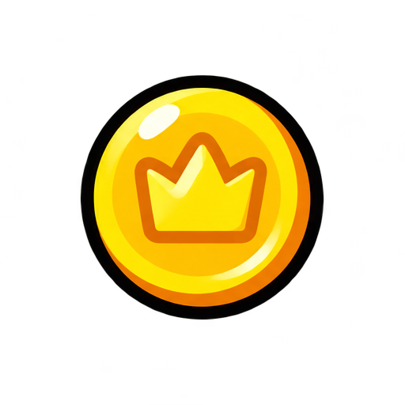
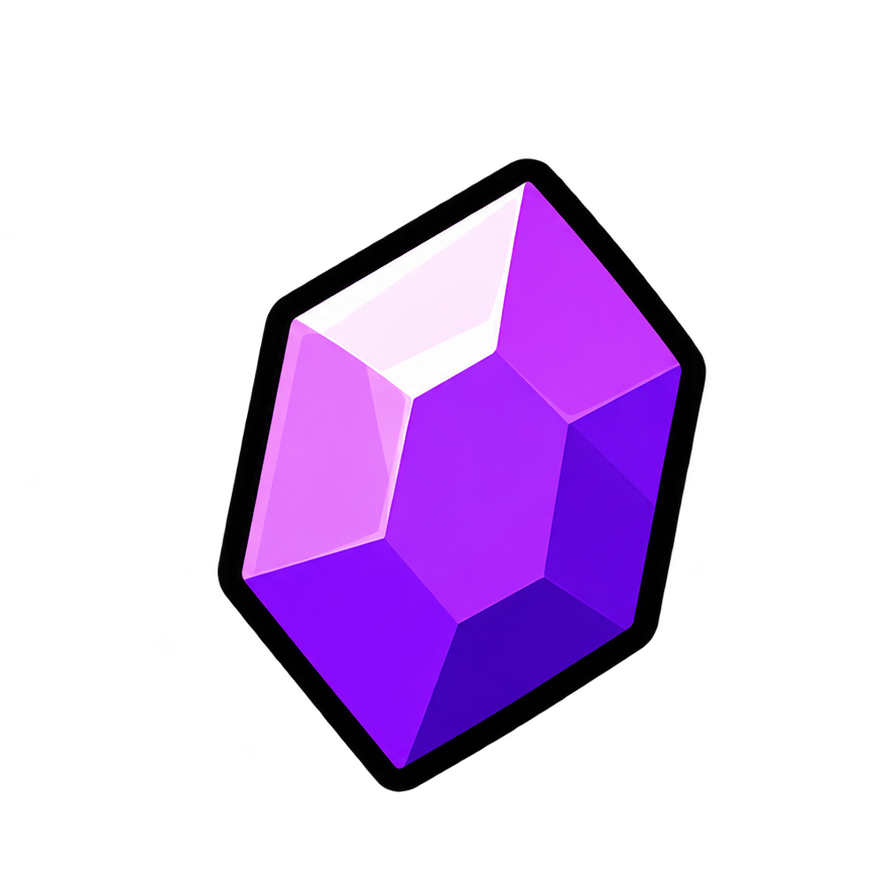
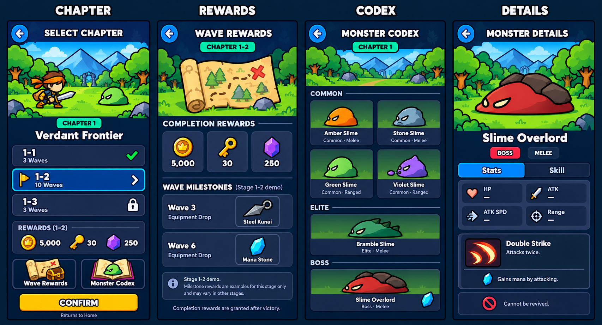

Bản xem duyệt, chưa thay vào game. Cột hiện tại bên dưới được dựng lại từ ChapterSelectScreen.cs; không phải ảnh chụp Play Mode. Trạng thái save chỉ minh họa.


5,00030
250Thứ tự: chọn chapter → thưởng → danh sách quái → chi tiết boss. Số liệu thưởng dùng để minh họa; stats quái sẽ đọc trực tiếp cấu hình khi triển khai.
